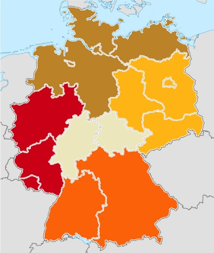

Anwendertreffen
Immer wieder tauchen Threads mit dem Thema "Ubuntu Anwender Treff in irgendeiner Stadt" auf. Diese Seite hat sich seit zwei Treffen bewährt: Nachdem vorher fast nie was daraus wurde, fanden die Treffen der Regionen Ost und Süd mit Erfolg statt.
Aus diesem Grund wurde diese Seite konzipiert, damit man Treffpunkte in der Nähe finden kann und um selber Vorschläge für eigene Treffen erstellen zu können. Ansonsten sind keine Grenzen gesetzt. Hier seid ihr gefragt! 
Jeder kann Treffen planen und diese Seite als Plattform benutzen, damit die wesentlichen Informationen an einer Stelle gesammelt werden können.
Und hier ein paar Tipps für eine richtige Planung:
Erstellt mit Hilfe der Vorlage eine neue Seite. Einfach nur den Namen Eurer Stadt mit dem Prefix "Anwendertreffen" eintragen (also z.B. "Anwendertreffen/Berlin") und auf "Seite erstellen" klicken. Ein Vorlage für den Inhalt ist auf Vorlage/Anwendertreffen
Erstellt einen Thread im Anwendertreffen und Messen Forum, damit Leser ihre Städte finden können.
Wenn Termin und Treffpunkt festgelegt sind, lasst bitte auch einen Termin im Kalender eintragen. Hierfür könnt ihr dies Formular verwenden.
Das wars, viel Spaß bei der Planung!
Terminübersicht¶
Um alle Termine im Blick zu haben, diese bitte nicht nur auf den Unterseiten, sondern auch auf der Gesamtübersicht eintragen:
Dort dürfen auch Nicht-Ubuntu-Treffen von LUGs oder anderen Stammtischen eingetragen werden. Nur mit Linux/OpenSource sollte es etwas zu tun haben. 
Deutschland¶
|  | ||
| Region | Länder | Farbe |
| Nord | Bremen, Hamburg, Mecklenburg-Vorpommern, Niedersachsen, Schleswig-Holstein | ▇ |
| West | Nordrhein-Westfalen, Rheinland-Pfalz, Saarland | ▇ |
| Mitte | Hessen, Thüringen | ▇ |
| Ost | Berlin, Brandenburg, Freistaat Sachsen, Sachsen-Anhalt | ▇ |
| Süd | Baden-Württemberg, Bayern | ▇ |

- Erstellt mit Inyoka
-
 2004 – 2017 ubuntuusers.de • Einige Rechte vorbehalten
2004 – 2017 ubuntuusers.de • Einige Rechte vorbehalten
Lizenz • Kontakt • Datenschutz • Impressum • Serverstatus -
Serverhousing gespendet von